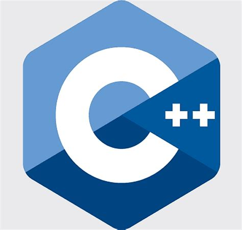

C++:

Sendo uma linguagem de extensão C e criado nos anos de 1980 por Bjarne Stroustrup, ela é muito usada para desenvolvimento de software, jogos, sistemas operacionais
e aplicações de alto desempenho, além de bibliotecas de framework e uma coisa boa desse C++ é que ele também apesar de ser o 5°lugar dos mais usados ele é usado em
indústria de jogos (Exemplo: Unity), em aplicações financeiras, software científico e de engenharia e até de sistemas de baixo nível, além de claro ferramentas de
desenvolvimento.